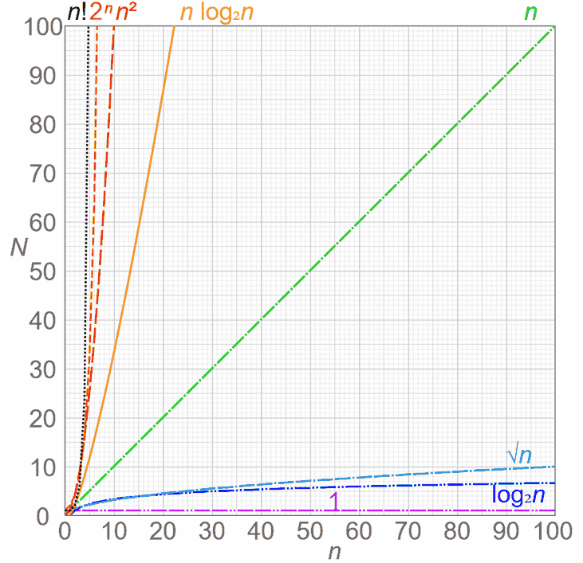

Big O Beginner's Guide
Disclaimer
I’m not a mathematician, so this won’t be exact, but I’ll try to give you an intuitive understanding of Big O.
Big O (usually written as O(x), where x is a mathematical equation like 1, n, n², or 2ⁿ, for example) describes how quickly the amount of work grows when the amount of input grows.
In beginner explanations this is often treated like “how bad can it get?”, and that’s usually good enough to build intuition.
What Big O Ignores
Big O is about the shape of the growth, not the exact number of steps. That means constants and smaller terms get ignored.
For example, if an algorithm takes 2n + 3 steps, we still write it as O(n). If it takes n² + n steps, we write it as O(n²).
The reason is simple: when n becomes very large, the biggest-growing part dominates the rest.
Example 1: Constant Time - O(1)
If you have an array or list and want to look up the nth item, it will maximally take a so-called “constant time”, expressed as O(1). This does not mean it literally takes one step, but it means that no matter how many items you have in your data structure, the number of steps it takes to retrieve the nth item is always a constant amount (whether it’s actually 1 step or 10 does not matter in practice).
value = items[5]
Example 2: Logarithmic Time - O(log n)
A lookup in a balanced binary search tree takes O(log n) steps. You can eliminate half of the remaining options at each step, just like with binary search.

Image sourced from Stanford’s Binary Trees
Note that you may execute a few constant steps before that (like creating a variable to save the answer in), but since O(log n)’s runtime overshadows any O(1) code, we only note the O(log n) part.
Check the middle
Then half of what remains
Then half again
Then half again...
Example 3: Linear Time - O(n)
If you want to find whether your array or list contains a certain item (assuming it’s an unsorted list), it will take O(n) steps, because each item has to be checked once to see if it’s the item you’re looking for.
If you have a list with 10 items and the last item is the one you’re looking for, it will take 10 steps. This represents the worst case scenario: Big O describes how many steps an algorithm maximally will take to run.
If your algorithm has a part that happens to be O(1) or O(log n), you still note it down as O(n), because O(n) overshadows the runtime of O(1) and O(log n).
for item in items:
if item == target:
return True
Example 4: Quadratic Time - O(n²)
If you have a nested loop, where for each element you go through all elements again (like in bubble sort), it will take O(n²) steps. This is because for each of the n elements, you perform n operations.
For example, if you have a list of 10 items, it might take up to 100 steps to complete.
for x in items:
for y in items:
do_something(x, y)
Example 5: Exponential Time - O(2ⁿ)
Some algorithms, like the naive recursive Fibonacci implementation, take O(2ⁿ) time. This means the amount of work roughly doubles with each extra step of input.
For example, with 10 items, it could take up to 1024 steps.
def fib(n):
if n <= 1:
return n
return fib(n - 1) + fib(n - 2)
Most Common Big O Notations
Now that you understand the basics, here’s a simplified list of possible Big O expressions, sorted from shortest to longest runtime. The bold-italic rows are the most common.
| Notation | Name | Example |
|---|---|---|
| O(1) | Constant | Array lookup like list[2] |
| O(log log n) | Double Logarithmic | |
| O(log n) | Logarithmic | Lookup in a sorted binary tree |
| O((log n)ᶜ) | Polylogarithmic | |
| O(nᶜ), where 0 < c < 1 | Fractional Power | Rare, but grows slower than O(n) |
| O(n) | Linear | For-loops |
| O(n log n) = O(log n!) | Linearithmic or Quasilinear | Merge sort, quicksort |
| O(n²) | Quadratic | Bubble sort, nested loops, insertion sort in the worst case |
| O(nᶜ), where c > 1 | Polynomial | Matrix multiplication |
| O(2ⁿ) | Exponential | Naive recursive Fibonacci |
| O(n!) | Factorial | Brute-force solutions |
For the full table: Wikipedia - Big O Notation
Another great article: Wikipedia - Time Complexity
Best, Average and Worst Case
One thing that can confuse beginners: the same algorithm can behave differently depending on the input.
For example, insertion sort is often listed as O(n²), which is true in the worst case, but if the list is already almost sorted it can behave much better.
So when you see a Big O value, always ask yourself: is this the best case, the average case, or the worst case?
Visually Speaking
Anything superlinear deserves attention, especially when the input can become large. That said, O(n log n) is often perfectly fine in practice, and sometimes even the best you can realistically do.
You can see why avoiding anything greater than O(n) is essential here, as the rate of growth increases dramatically:

Source: Comparison Computational Complexity
{kind=link}
A Bit of Trivia
There’s a concept in mathematics called P=NP, which questions whether every problem whose solution can be quickly verified can also be quickly solved. For instance, verifying a Sudoku solution is quick, but solving it is not.
This problem is currently unsolved in Computer Science, so maybe (if you’re smarter than me) you can solve it in the future.
Closing Words
I hope this short intro into Big O has been helpful to you. 😊
PS: Note that there are other asymptotic notations (like little-o, Big-Omega, little-omega, and Theta). These represent different aspects of algorithm performance, but that’s outside the scope of this tutorial.